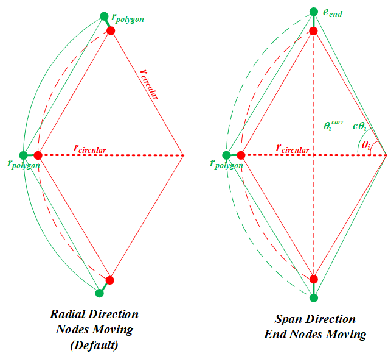

- inputThe input mesh to be modified.
C++ Type:MeshGeneratorName
Controllable:No
Description:The input mesh to be modified.
- input_mesh_circular_boundariesNames of the circular boundaries.
C++ Type:std::vector<BoundaryName>
Controllable:No
Description:Names of the circular boundaries.
CircularBoundaryCorrectionGenerator
This CircularBoundaryCorrectionGenerator object is designed to correct full or partial circular boundaries in a 2D mesh to preserve areas.
Overview
The CircularBoundaryCorrectionGenerator object performs radius correction to preserve circular area considering polygonization effect for full or partial circular boundaries in a 2D mesh within the Z=0 plane.
In a 2D mesh, a "circular boundary" consists of sides that connect a series of nodes on the circle, which actually form a polygon boundary. Due to the polygonization effect, the area within a "circular boundary" in a 2D mesh is actually smaller than a real circle with the same radius. Such a discrepancy could cause issues in some simulations that involve physics that are sensitive to volume conservation.
Therefore, a corrected radius can be used to generate the "circle-like" polygon to enforce that the polygon area is the same as the original circle without polygonization. This can be achieved with either of the following approaches.
Moving Radial Nodes
The most straightforward approach for circular correction is to move the nodes on the circular boundary in their respective radial directions (see the left sub-figure of Figure 1). In that case, the azimuthal angle intervals of the boundary sides do not change. Therefore, the algorithm is relatively simple. This is also the default approach of this mesh generator.
For a polygon region used to mesh a full or partial circle, each side (with index ) corresponds to an azimuthal angle interval, , which is defined by the side and the center of the polygon:
(1)with
(2)should be for a full circle and between 0 to for a partial circle. For such a full or partial real circle, the area has the following form:
(3)To enforce that , the radii of the polygon and the circle have the following relation,
(4)Where is the correction factor used in this object to ensure volume preservation.

Figure 1: A schematic drawing showing the two approaches to correct the polygonization effect for a partial circular boundary
Optional additional circular boundary expansion in the span direction
Moving the radial nodes is undoubtedly the most generalized approach for a full circular boundary. However, for a partial circular boundary, moving the two end nodes in their radial directions may deform the original shape. Therefore, moving the end nodes in the span direction of the partial circular boundary (i.e., arc) provides an alternative approach (see the right subfigure of Figure 1). Moving the end nodes in the span direction inevitably changes the azimuthal angle intervals. To make this change consistent for all the boundary sides, a scaling coefficient, , is applied to every .
(5)(6)(7)Note that if the partial circular boundary happens to be a half circle (i.e., ), Eq. (7) cannot be solved as both numerator and denominator are zero. In that case the span direction is also the radial direction. Therefore, has a trivial value of unity; and the node moving should be calculated using the "radial nodes moving" approach. If the boundary if not a half circle (i.e., ), the above equation is solved by Newton-Raphson method to obtain . The displacement of the end nodes () can be calculated as follows.
(8)Users should set "move_end_nodes_in_span_direction" as true to enable this radius correction approach for partial circular boundaries.
Usage
This object is capable of correcting multiple circular boundaries within a 2D mesh at the same time. Each circular boundary must be provided as a single boundary id/name in "input_mesh_circular_boundaries".
Moving the nodes on a circular boundary may flip the local elements. In order to reduce the probability of element flipping, a transition area is defined for each circular boundary, which is a ring area covering both inner and outer sides of the circular boundary in which the nodes will be moved based on the correction factor. The moving distance fades as the node-to-circle distance increases. The transition area size is defined using a fraction of the boundary radius, which can be customized in "transition_layer_ratios".
Example Syntax
[Mesh<<<{"href": "../../syntax/Mesh/index.html"}>>>]
[cir1]
type = ParsedCurveGenerator<<<{"description": "This ParsedCurveGenerator object is designed to generate a mesh of a curve that consists of EDGE2, EDGE3, or EDGE4 elements.", "href": "ParsedCurveGenerator.html"}>>>
x_formula<<<{"description": "Function expression of x(t)"}>>> = 'r*cos(t*2*pi)'
y_formula<<<{"description": "Function expression of y(t)"}>>> = 'r*sin(t*2*pi)'
section_bounding_t_values<<<{"description": "The 't' values that bound the sections of the curve. Start and end points must be included. The number of entries in 'nums_segments' should be equal to one less than the number of entries in this parameter."}>>> = '0 1'
constant_names<<<{"description": "Vector of constants used in the parsed function (use this for kB etc.)"}>>> = 'pi r'
constant_expressions<<<{"description": "Vector of values for the constants in constant_names (can be an FParser expression)"}>>> = '${fparse pi} 1.0'
nums_segments<<<{"description": "Numbers of segments (EDGE elements) of each section of the curve to be generated. The number of entries in this parameter should be equal to one less than the number of entries in 'section_bounding_t_values'"}>>> = '10'
is_closed_loop<<<{"description": "Whether the curve is closed or not."}>>> = true
[]
[cir2]
type = ParsedCurveGenerator<<<{"description": "This ParsedCurveGenerator object is designed to generate a mesh of a curve that consists of EDGE2, EDGE3, or EDGE4 elements.", "href": "ParsedCurveGenerator.html"}>>>
x_formula<<<{"description": "Function expression of x(t)"}>>> = 'r*cos(t*2*pi)'
y_formula<<<{"description": "Function expression of y(t)"}>>> = 'r*sin(t*2*pi)+0.5'
section_bounding_t_values<<<{"description": "The 't' values that bound the sections of the curve. Start and end points must be included. The number of entries in 'nums_segments' should be equal to one less than the number of entries in this parameter."}>>> = '0 1'
constant_names<<<{"description": "Vector of constants used in the parsed function (use this for kB etc.)"}>>> = 'pi r'
constant_expressions<<<{"description": "Vector of values for the constants in constant_names (can be an FParser expression)"}>>> = '${fparse pi} 2.0'
nums_segments<<<{"description": "Numbers of segments (EDGE elements) of each section of the curve to be generated. The number of entries in this parameter should be equal to one less than the number of entries in 'section_bounding_t_values'"}>>> = '15'
is_closed_loop<<<{"description": "Whether the curve is closed or not."}>>> = true
[]
[xyd1]
type = XYDelaunayGenerator<<<{"description": "Triangulates meshes within boundaries defined by input meshes.", "href": "XYDelaunayGenerator.html"}>>>
boundary<<<{"description": "The input MeshGenerator defining the output outer boundary and required Steiner points."}>>> = cir1
desired_area<<<{"description": "Desired (maximum) triangle area, or 0 to skip uniform refinement"}>>> = 0.5
refine_boundary<<<{"description": "Whether to allow automatically refining the outer boundary."}>>> = false
# output_boundary = '10'
output_subdomain_name<<<{"description": "Subdomain name to set on new triangles."}>>> = '10'
[]
[xyd2]
type = XYDelaunayGenerator<<<{"description": "Triangulates meshes within boundaries defined by input meshes.", "href": "XYDelaunayGenerator.html"}>>>
boundary<<<{"description": "The input MeshGenerator defining the output outer boundary and required Steiner points."}>>> = cir2
holes<<<{"description": "The MeshGenerators that define mesh holes."}>>> = xyd1
refine_holes<<<{"description": "Whether to allow automatically refining each hole boundary."}>>> = 'false'
desired_area<<<{"description": "Desired (maximum) triangle area, or 0 to skip uniform refinement"}>>> = 0.5
refine_boundary<<<{"description": "Whether to allow automatically refining the outer boundary."}>>> = false
output_subdomain_name<<<{"description": "Subdomain name to set on new triangles."}>>> = '20'
hole_boundaries<<<{"description": "Boundary names to set on holes. Default IDs are numbered up from 1 if no hole meshes are stitched; or from maximum boundary ID of all the stitched hole meshes + 2."}>>> = '10'
[]
[ccg]
type = CircularBoundaryCorrectionGenerator<<<{"description": "This CircularBoundaryCorrectionGenerator object is designed to correct full or partial circular boundaries in a 2D mesh to preserve areas.", "href": "CircularBoundaryCorrectionGenerator.html"}>>>
input<<<{"description": "The input mesh to be modified."}>>> = xyd2
input_mesh_circular_boundaries<<<{"description": "Names of the circular boundaries."}>>> = '0 10'
custom_circular_tolerance<<<{"description": "Custom tolerances (L2 norm) used to verify whether the provided boundaries are circular (default is 1.0e-6)."}>>> = 1e-8
[]
[]Input Parameters
- custom_circular_toleranceCustom tolerances (L2 norm) used to verify whether the provided boundaries are circular (default is 1.0e-6).
C++ Type:std::vector<Real>
Unit:(no unit assumed)
Range:custom_circular_tolerance>0
Controllable:No
Description:Custom tolerances (L2 norm) used to verify whether the provided boundaries are circular (default is 1.0e-6).
- move_end_nodes_in_span_directionFalseWhether to move the end nodes in the span direction of the arc or not.
Default:False
C++ Type:bool
Controllable:No
Description:Whether to move the end nodes in the span direction of the arc or not.
- transition_layer_ratiosRatios to radii as the transition layers on both sides of the original radii (if this parameter is not provided, 0.01 will be used).
C++ Type:std::vector<Real>
Unit:(no unit assumed)
Range:transition_layer_ratios>0&transition_layer_ratios<=1.0
Controllable:No
Description:Ratios to radii as the transition layers on both sides of the original radii (if this parameter is not provided, 0.01 will be used).
Optional Parameters
- enableTrueSet the enabled status of the MooseObject.
Default:True
C++ Type:bool
Controllable:No
Description:Set the enabled status of the MooseObject.
- save_with_nameKeep the mesh from this mesh generator in memory with the name specified
C++ Type:std::string
Controllable:No
Description:Keep the mesh from this mesh generator in memory with the name specified
Advanced Parameters
- nemesisFalseWhether or not to output the mesh file in the nemesisformat (only if output = true)
Default:False
C++ Type:bool
Controllable:No
Description:Whether or not to output the mesh file in the nemesisformat (only if output = true)
- outputFalseWhether or not to output the mesh file after generating the mesh
Default:False
C++ Type:bool
Controllable:No
Description:Whether or not to output the mesh file after generating the mesh
- show_infoFalseWhether or not to show mesh info after generating the mesh (bounding box, element types, sidesets, nodesets, subdomains, etc)
Default:False
C++ Type:bool
Controllable:No
Description:Whether or not to show mesh info after generating the mesh (bounding box, element types, sidesets, nodesets, subdomains, etc)